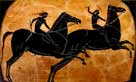
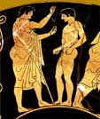
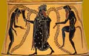

Festivals and Games
|  |
|
Festivals were a very important part of life in ancient Greece, and were
a central part of worshipping the gods. They usually included a procession
and a sacrifice.
|
Festivals also included various competitions, which were seen as another
way to honour a god. There were competitions in music, poetry, drama and
also athletics. Some of the most important festivals of ancient Greece
involved athletic competition, such as the Olympic Games, which were held
in honour of Zeus, and the Pythian Games, held at Delphi in honour of Apollo.
|
|
 |
|  |
|
One festival in Athens, held to honour Dionysos, involved a competition
between playwrights. This led to the creation of some of the best known
plays from ancient Greece, written by people such as Sophokles, Euripides
and Aristophanes. |
|
Follow the events of the Olympic Games
|
Explore a Greek theatre and find out about actors, costumes, masks….
|
Can you match each festival to the correct god or goddess?
|

|
|